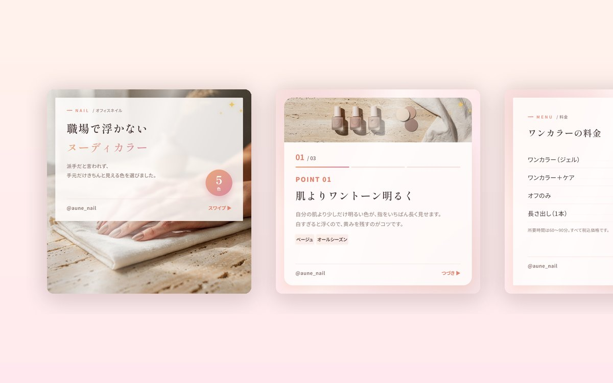
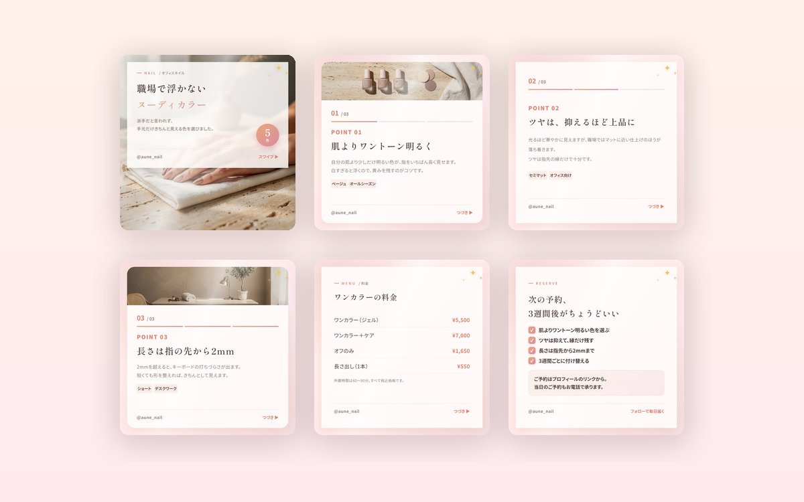
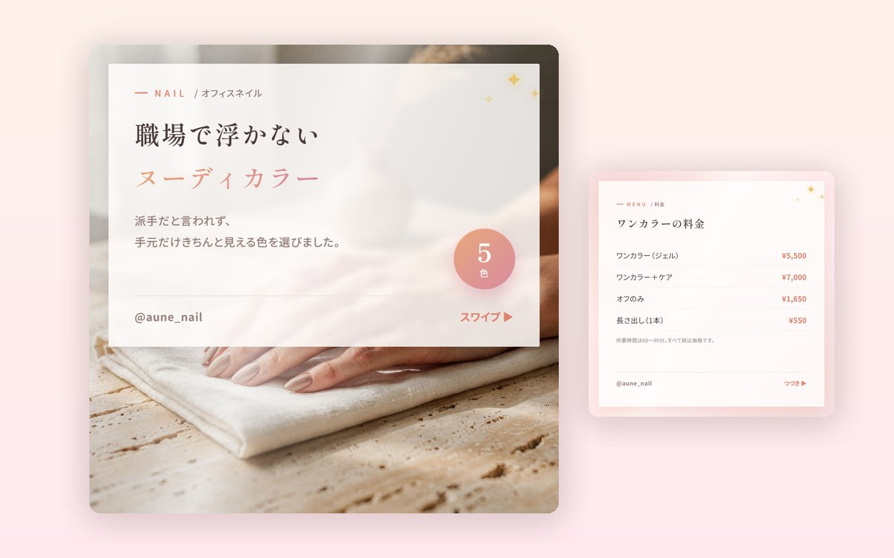

Instagram（投稿）／ ネイルサロン
AUNE nail
オフィスでも浮かない色をすすめる、大人向けネイルサロンのアカウントを想定しました。 情報量を増やすのではなく、余白と明朝体は保ったまま、光と箔で華やかさを足すことを主題にしています。



| 種別 | Instagram投稿／架空のネイルサロンを想定した自主制作 |
|---|---|
| 担当範囲 | 企画・構成・コピーライティング・デザイン・写真素材の生成 |
| 使用ツール | HTML・CSS（書き出し用テンプレート）／ Node.js ／ FLUX（画像生成） |
| 規模 | カルーセル6枚 ／ スライドの型4種（表紙・本文・料金表・案内） |
文字は減らす。華やかさは、地の色で出す
美容系のアカウントは、文字を詰めるほど安く見えます。ここでは1枚あたりの本文を2〜3行に抑え、カード内側の余白を86pxまで広げました。他の案件（税理士事務所）では68pxなので、2割以上ゆるい設定です。
ただ、余白だけで作るとフィードのなかでは地味に沈みます。そこで文字量はそのままに、背景をピーチからローズへのグラデーションにし、見出しの一部をローズからゴールドのグラデーションで抜きました。書体は明朝のまま、字間も0.06emのままです。
足したのは色と光だけで、文字の太さと量には一切触れていません。ここを太くすると、単価の高さの印象がそのまま崩れます。
箔のような光を、1か所だけ置く
数字バッジは塗りつぶしの円に戻し、ローズからゴールドのグラデーションと、外側に回した光で箔のような質感にしました。きらめきの装飾は右上に3つだけです。
散らしすぎると、素材サイトのテンプレートのように見えます。光るものは画面に2つまで（バッジときらめき）と決め、タグや罫線は淡いままにしています。
写真は3枚に抑える
6枚中、写真を使ったのは3枚です。全枚数に写真を入れると、スクロールしたときに情報が頭に残りません。写真は表紙と、色の話をする本文と、店内の雰囲気を見せる本文だけに置きました。
素材は生成画像で、色設計（グレージュ・サンド）、浅い被写界深度、高めの露出を固定した指示で3点作っています。人物は手元のみです。
つまずいた点：ピンクを避けるだけでは、同じ写真になってしまう
最初の指示では、以前に作った別アカウント（20代向けの情報発信）と構図も光もほとんど同じ写真が出てきました。「カフェの手元」「淡い色」という指定が共通していたためです。
変えたのは色ではなく、質感と光の方向でした。トラバーチン（石）とリネン、北向きの窓からの拡散光、高めの露出を指定し、「no pink cast」を明示。同じ淡い色でも、石とリネンの質感が入ると別のブランドに見えます。色を変えるより、素材を変えるほうが効きました。
なお、写真そのものは淡いままにしてあります。華やかさは背景のグラデーション側で作り、写真には足していません。写真まで色を盛ると、実際の施術と仕上がりの色が変わってしまうためです。
料金表も、同じテンプレートで出せるようにする
サロンのアカウントでは、料金とメニューの投稿が必ず必要になります。これを画像編集ソフトで作ると、値上げのたびに作り直しになります。
そこで料金表を1つの型として組み込みました。メニュー名と価格を並べて書くだけで、点線のリーダーと右端そろえの価格が出ます。価格だけアクセントカラーで拾い、所要時間や税込表記の注記も定位置に入ります。
実運用に足りていないもの
サロンの集客では、施術例の写真がいちばん見られます。今回は生成画像のため、実際のデザインや仕上がりは載せられていません。運用するなら、施術後の写真を同じトリミング・同じ明るさで撮る撮影ルールの設計から入ります。
また、価格は架空のものです。実際には地域相場と客層を見て決める部分で、デザイン側だけで決められる数字ではありません。